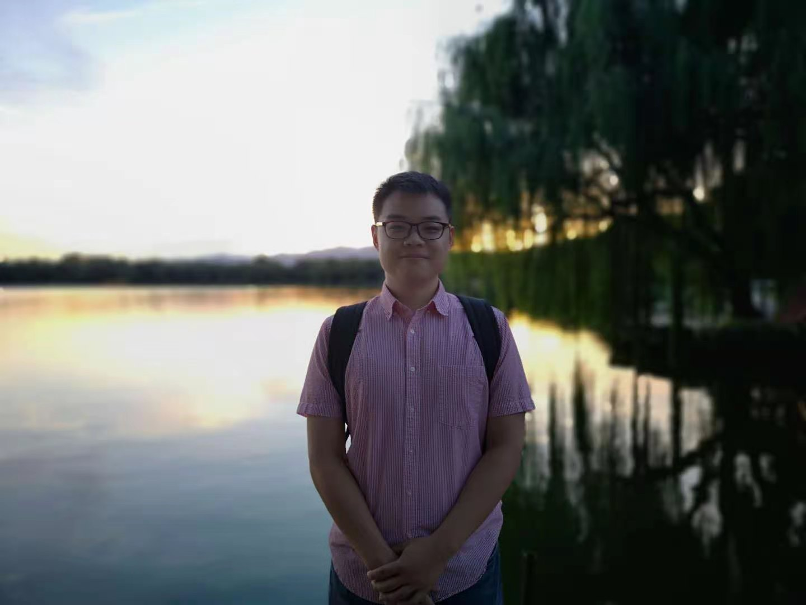

PhD student, Tsinghua University.
ztk18 at mails.tsinghua.edu.cn
Advisor: Prof. Lu Fang
Selected Publications
- Zhou, Tiankuang, et al. "Large-scale neuromorphic optoelectronic computing with a reconfigurable diffractive processing unit." Nature Photonics 15.5 (2021): 367-373.
- Zhou, Tiankuang, et al. "In situ optical backpropagation training of diffractive optical neural networks." Photonics Research 8.6 (2020): 940-953.